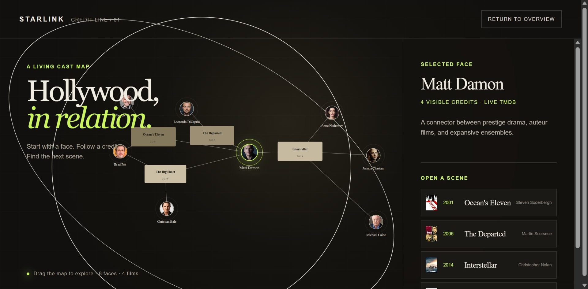

My
Portfolio
把日常问题做成工具，也持续探索图像与交互。
Scroll to explore
01 / 02
图像创作实验Photo Abstract Editorial
从照片中提取关系，生成具有编辑感的抽象视觉作品。
View project 原图
原图 抽象
抽象02 / 02
关系数据交互原型Starlink
探索演员与电影之间协作关系的交互式图谱。
View project
More experiments
Tap to learn more.